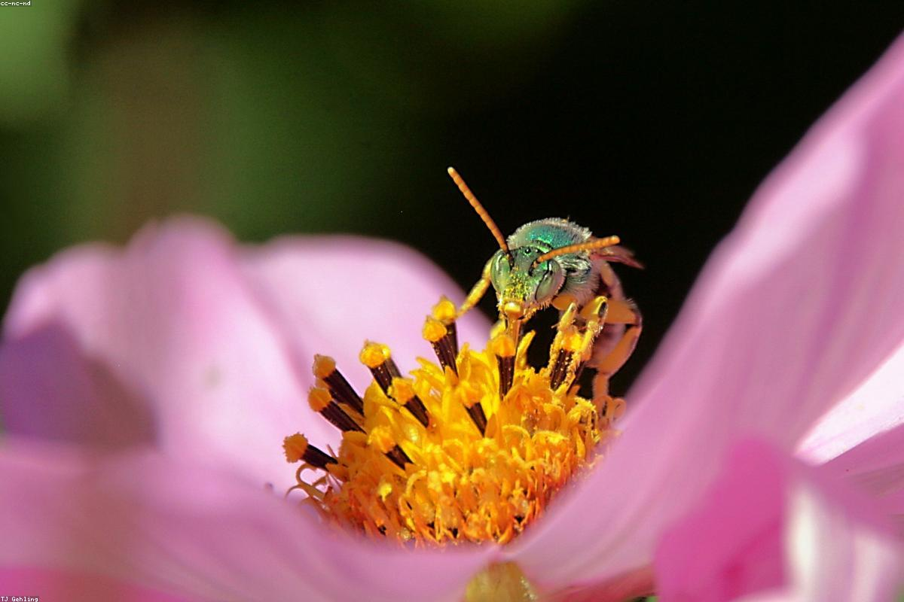
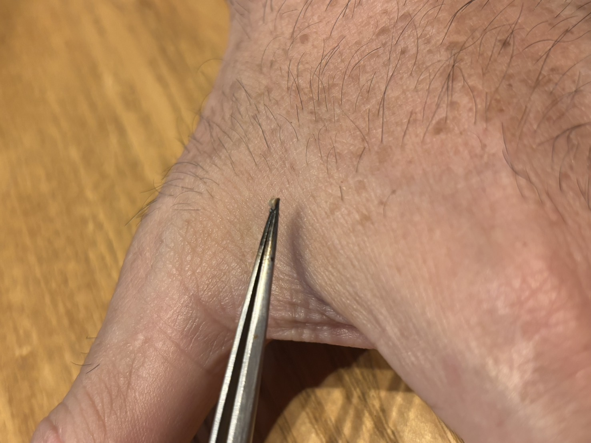

蜂という自然由来の素材を扱うこと
蜂由来の成分を用いるからこそ、体質やアレルギー歴の確認が欠かせません。自然由来であることを、安易な安全の根拠にはしません。
BEE VENOM THERAPY · INAMI, HYOGO
長く続くつらさに、さまざまな選択肢を探してこられた方へ。
蜂針療法について、はじめる前に知っていただきたいことを、正直にお伝えします。
自然の力を用いるからこそ、
慎重な判断を。
治すと約束する場所ではありません。
FOR THOSE SEEKING ANOTHER WAY
長く続く不調や、これまでの方法では納得のいく変化を感じられなかった経験。蜂針療法を調べられる背景には、言葉にしにくい切実さがあることを私たちは理解しています。
だからこそ、期待だけをお伝えすることはしません。蜂針療法で何ができるかを断定するのではなく、考えられるリスクや、受けない方がよい場合も含めて、判断に必要な情報を一緒に整理します。
WHAT IS APITHERAPY?
蜂由来の成分を用い、からだの状態と向き合うための、伝統的な民間療法の一つです。
蜂針療法は、ミツバチの針や蜂毒由来の成分を用いる方法として知られています。一般的な医療行為とは異なるアプローチだからこそ、「いまの自分にとって、検討する意味があるか」を丁寧に見極めることを大切にしています。
病気の診断・治療や、症状の改善を保証するものではありません。しかし、これまでの経過やご自身の感覚をあらためて見つめ、次に何を選ぶかを考えるきっかけとして、ご相談いただけます。
蜂針療法は「アピセラピー（Apitherapy）」とも呼ばれ、ミツバチがもたらす蜂針や蜂毒などを用いる民間療法の一つに数えられます。その考え方は古くから世界各地で経験的に受け継がれてきたと言われていますが、現代の医療として確立・承認されたものではありません。
蜂毒にはさまざまな成分が含まれることが知られています。ただし、その働きや安全性については今も研究の途上にあり、すべての方に同じ結果をもたらすものではありません。だからこそ私たちは、期待をあおる言葉ではなく、「わかっていること」と「まだわからないこと」の両方を、そのままお伝えすることを大切にしています。

A PLACE TO CONSIDER YOUR OPTIONS
いま抱えている悩みと、蜂針療法という選択肢を、落ち着いて照らし合わせる時間です。
「何を試してきたのか」「いま一番困っていることは何か」「大切にしたい生活はどんなものか」。こうしたお話を伺うことで、蜂針療法を検討するべきか、別の選択を優先すべきかを考える土台が生まれます。
期待だけで前に進むのでも、最初から可能性を閉じるのでもなく、ご自身が納得できる判断へ。まずは、答えを探すための対話から始めてみませんか。
ご相談で整理できること
CHARACTERISTICS
蜂由来の成分を用いるからこそ、体質やアレルギー歴の確認が欠かせません。自然由来であることを、安易な安全の根拠にはしません。
気になっていること、生活の状況、これまでの経過は一人ひとり異なります。画一的な説明ではなく、相談内容に沿って検討します。
ご相談後にお申し込みを急かすことはありません。説明を受け、ご自身のペースで納得して選ぶことを何より大切にします。
BEFORE YOU DECIDE
「受ける」ことを前提に進めるのではありません。まず、以下のことを一つずつ確認します。
気になっている症状、これまでに受けた医療やケア、現在の体調について伺います。すでに医療機関にかかっている場合は、その状況を大切にします。
蜂毒によるアレルギー反応には重篤なものがあります。既往歴、アレルギー歴、服薬や妊娠・授乳の状況などを伺い、慎重に判断します。
内容をご理解いただいたうえで、ご自身の意思でご検討ください。不安や疑問が残る場合、無理にお申し込みいただくことはありません。
SAFETY FIRST
蜂毒に対する反応は、人によって大きく異なります。
蜂毒は、皮膚の腫れや痛みだけでなく、じんましん、息苦しさ、血圧低下などを伴うアナフィラキシーにつながることがあります。蜂に刺された経験がある方も、ない方も、安易に自己判断することはできません。
蜂毒アレルギーがある方、過去に蜂に刺されて全身症状が出た方、妊娠中・授乳中の方、持病がある方、服薬中の方は、必ず事前に医師へご相談ください。緊急性のある症状がある場合は、まず医療機関へご相談ください。
こうしたリスクをふまえ、当方でははじめる前にパッチテスト（皮膚にごく少量を用いて反応を確認する方法）を行い、アレルギー反応が出ないことを確かめたうえでご案内しています。パッチテストはごく少量で行うため、一般に強い痛みを感じにくい方法ですが、チクッとした軽い刺激や、その後に軽い腫れ・かゆみを感じる場合があり、感じ方には個人差があります。痛みや不安が強い場合は、遠慮なくお申し出ください。ただし、パッチテストで反応がなかった場合でも、その日の体調などによってまれに全身の反応が起こることがあるため、施術中・施術後も慎重に確認します。

ご相談をお控えいただく場合があります
CONSULTATION FLOW
FAQ
ご相談の前に、よくいただくご質問をまとめました。
ミツバチの蜂針や蜂毒由来の成分を用いる、古くから世界各地で知られてきた民間療法の一つです。一般的な医療行為とは異なり、効果・効能を保証するものではありません。
蜂針を用いるため、チクッとした刺激や、その後の腫れ・かゆみを伴うことがあります。感じ方には個人差があり、事前に方法や起こりうる反応を必ずご説明します。
いいえ。蜂毒アレルギーのある方、過去に蜂に刺されて全身症状が出た方、妊娠中・授乳中の方、持病や服薬中の方などは、お受けいただけない場合があります。安全のため、事前の確認を必ず行います。
なりません。蜂針療法は医療の代替ではありません。現在治療を受けている方は、主治医の指示を優先してください。当方は診断や治療を行うものではありません。
回数や頻度を一律にお約束することはありません。ご相談のうえ、ご本人が納得できる範囲で判断していただきます。
はい。「受ける」と決める前の情報収集の段階でも構いません。疑問や不安を伺うことを大切にし、無理な勧誘は一切いたしません。
VOICE
ありがとうございます。親身にご相談にのっていただき、本当に感謝しています。
※ 掲載内容は個人の感想であり、効果・効能を保証するものではありません。
CONTACT
「こんなことを聞いてよいのだろうか」という段階でも構いません。
判断を急かすことなく、お話を伺います。
ご相談・お問い合わせ
アピセラピー稲美に相談する →